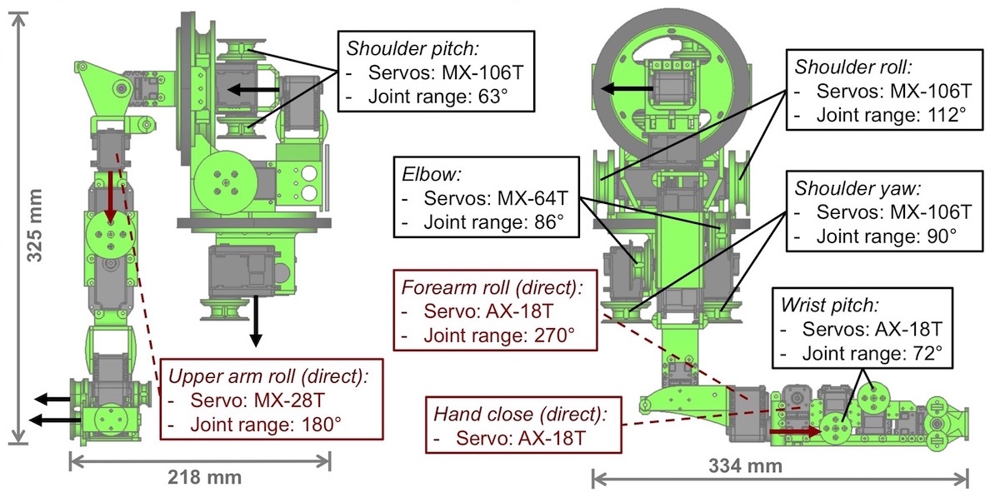

Thinking about building one? Keep reading! The GummiArm is fully open source, and we encourage both replications and improvements.

The arm is actuated by Dynamixel servos from Robotis Inc (Irvine, CA, USA), see figure above (v2.2.0). There are 5 agonist-antagonist joints, each with 2 Dynamixel servos pulling on tendons that work against each other. For example the biceps and triceps actuating on the elbow joint. 2 joints are directly driven by servos, and 1 servo is included in the forearm to drive a hand.
The arm structure is made of PLA plastic, and is printable on hobby-grade 3D printers . See all parts for arm above (v2.2.0). The first prototype was printed on a BQ (Madrid, Spain) Prusa i3 Hephestos printer with 20% infill (for most of parts). The full set of parts is available in the repository as FreeCAD files (.FCStd). You can get FreeCAD here: FreeCAD

So how much cost building the GummiArm? Since most of its part are 3D printed, this soft robot arm is quiet cheap and if you break it during experiments or other projects you can easily print damaged parts.
| Material | Quantity | Price per unit | Total price |
|---|---|---|---|
| Dynamixel MX-106 | 6 | 493.9 $ | 2963.4 $ |
| Dynamixel MX-64 | 2 | 299.90 $ | 599.8 $ |
| Dynamixel MX-28 | 1 | 219.9 $ | 219.9 $ |
| Dynamixel AX-18A | 4 | 94.9 $ | 379.6 $ |
| Dynamixel AX-12A | 6 | 44.5 $ | 267 $ |
| Screws and bolts | 104.8 $ | ||
| Slewing bearing 140 mm | 2 | 19.95 $ | 39.9 $ |
| Slewing bearing 140 mm | 1 | 19.95 $ | 19.95 $ |
| TOTAL | 4594.35 $ |